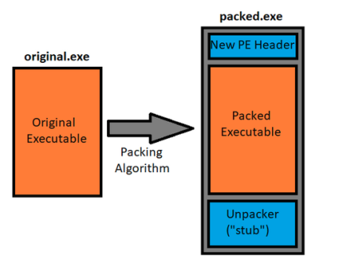
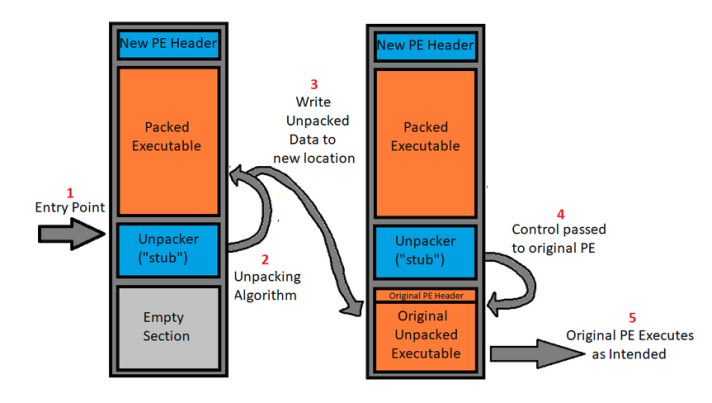

What is packing?
Distributing an executable in a compressed or obfuscated state, making it more difficult to detect statically analyze and reverse engineer. In the context of malware, since the primary malicious payload is compressed or obfuscated in a packed sample, security products that perform automated static analysis may have issues flagging the binary as malicious, which is obviously a major advantage for malware developers.
We can loosely categorize packers:
· Compressing packers:primary purpose is to distribute the executable in a compressed format, primarily to reduce the size of the file being distributed. · Encrypting packers:
primary purpose is to encrypt or obfuscate the distributed executable to prevent end users from reverse engineering the application. Encrypting packers are sometimes called as crypter.
Some packers are going to do some combination of both. In the case of UPX, compression is the exclusive purpose, and no encryption is performed. It’s important to note that packing is not something exclusively found in the world of malware, there is an uncountable number of vendors pack their products to either reduce the size of their product or protect their product from being reverse engineered and re-distributed.
How does packing work?
Stub-payload packing architecture, which is one of the most common mechanisms used by packers, including UPX. In a “stub-payload” architecture, new executable is created that contains two primary components: the compressed/encrypted contents of the original executable, and a short piece of code responsible for decompressing/decrypting that original executable to executing it. This short piece of code is often referred to as a stub. In essence, the original executable is compressed/encrypted, then wrapped in a new executable which contains code to bring it back to its original state.
{kind=link}
The stub will be the entry point of the new executable and once it performs the necessary decompression or decryption processes, it will pass control flow to the original executable which would then be in its original state. At this point the original executable carries on its execution as if it were never packed to begin.
{kind=link}
Indications of Packing:
Immediately look for hint towards a packed sample:
Lack of Imports in Import Address Table (IAT):
In order for an executable to interact in any meaningful way with the underlying operating system, it is required that the executable imports functions built into system libraries such as kernel32.dll and user32.dll. When looking at a fully unpacked sample, you’re often going to see a large number of imports, since malware is obviously going to want to interact quite heavily with the operating system. However, since the stub of a packed sample doesn’t have much functionality outside of unpacking and executing the real payload, packed samples often have a suspiciously low number of imports comparative to a standard executable.
Non-standard Section Names:
In a traditional executable, you’re often going to have the same sections every time (. text, Data, rsrc, etc). However, many packers define their own custom sections, which indicates that the executable is non-standard and may be packed. For example, the UPX packer ships its final executable with the non-standard section names of UPX0 and UPX1.
Sections with a small raw size but a large virtual size:
When you see a section with a small raw size (sometimes 0), that indicates that the actual executable does not contain any raw data in that specific section. However, when the executable is loaded into memory, the raw size is no longer relevant, and instead the virtual size of each specific section is allocated in memory. If a section is being allocated a large amount of virtual space, yet contains no actual raw data, that indicates a potential cave in which unpacked code may eventually be written to, which is commonly done by unpacking algorithms.
Sections with very high entropy:
The word entropy refers to the variance and “randomness” of a piece of data. Things like the English language, assembly code, and other well-defined structures of communication usually have low entropy since language tends to follow predictable patterns. However, things like encrypted data and compressed data have no such sense of predictability, and hence have much higher entropy. If a section of data has high entropy, it’s likely the section contains either compressed or encrypted data that will eventually be unpacked.
Low number of discernible strings:
In a fully unpacked executable, you should be able to notice a decent number of readable strings, since most applications (including malware) use protocols that implement human language (for example, HTTP uses POST, HEAD, GET, etc). These sorts of strings, which should exist in a standard executable will not exist in packed executables, since the strings will be encrypted or compressed. If we analyse the strings of a binary and cannot interpret any readable strings, you could be dealing with a packed sample.
Sections with RWX privileges:
In standard executables, it is uncommon for a section to be marked as both writable and executable, want to write over the executable code contained in application. Additionally, you rarely dynamic write additional executable code in a standard application. Because of this, there’s never really any reason for a section to be both writable and executable, except in the case of a packer, in which data will be unpacked into a section (write) then passed execution (execute).
jmp or call Instructions to registers/strange memory addresses: For many packers, the address to the location of where data is being unpacked to is stored in a register (such as eax), and that memory address is often in an entirely different section. Very long jumps like this are relatively uncommon, since all the executable code in a binary is usually contained in a single section.
If we see a jmp/call to a memory address that:
1) Isn’t in the current section
2) Isn’t in the address space of a loaded library, it’s likely that jump is to unpacked code.
Taking a look at our UPX sample:
To poke at our UPX sample, and get to the original portable executable for further analysis, the generic steps we need to take are as follows:
1. Look at the PE header and verify our sample is in fact packed by UPX.
2. Figure out where the unpacked data is going to be written to by looking at memory allocation, etc.
3. Look for any jmp or call references to either a register or to the memory space of where the unpacked data is likely being written to within the stub code.
4. Set a breakpoint on that jmp or call instruction.
5. Dump the data contained in that memory space, fix it’s import resolutions, then export it as a new executable.